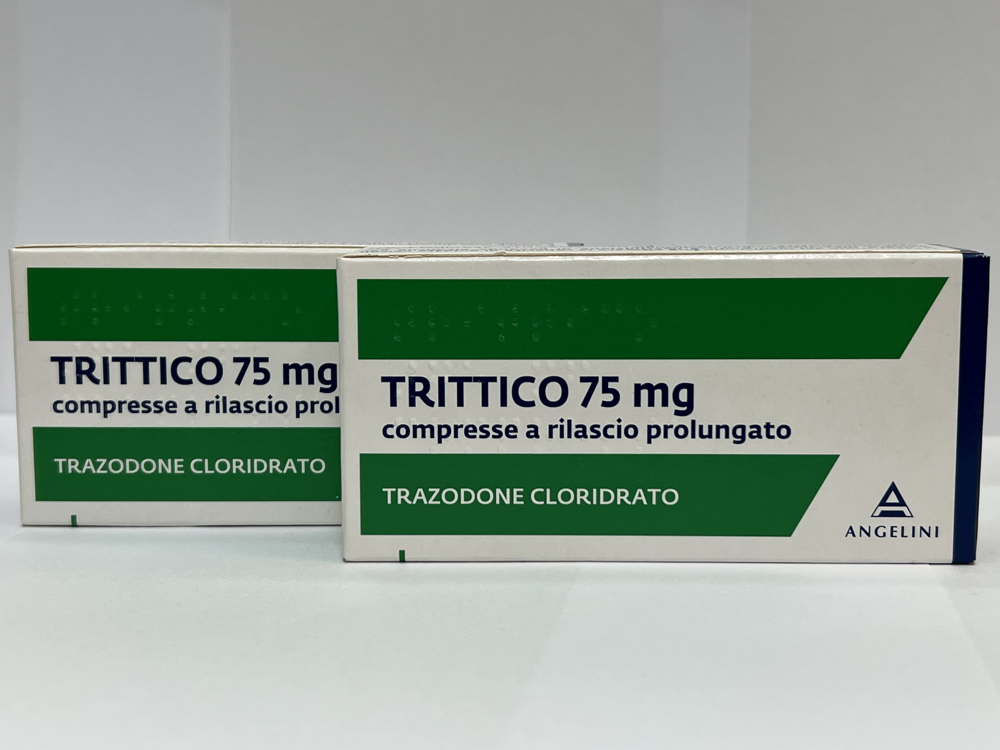

Контактная информация:
Цена: 450 грн/уп.
Под заказ
Производитель: Италия
Цена: 450 грн/уп.
Под заказ
Именно в FarmItal вы можете купить таблетки Триттико, Trittico в Украине, Гарантированно Качественный!
Доставка Trittico осуществляется транспортными компаниями, сроки выполнения заказа оговариваются менеджером Фармитал. Вы можете заказать Могадон в городах: Одесса, Херсон, Чернигов, Северодонецк, Бердянск, Бровары, Днепр, Винница, Киев, Славянск, Полтава, Краматорск, Белая Церковь, Каменское, Мариуполь, Черновцы, Александрия, Каменец- Подольский, Львов, Запорожье, Кропивницкий, Житомир, Ивано-Франковск, Сумы, Черкассы, Константиновка, Мелитополь, Кривой Рог, Ровно, Луцк, Никополь, Павлоград, Ужгород, Кременчуг, Лисичанск, Хмельницкий, Тернополь, Харьков, Николаев, а также других населенных пунктах Украины.
Триттика выпускается в форме таблеток.
Таблетки Триттико выполнены на основе тразодона.
Общие седативные эффекты нейролептиков, снотворных, седативных средств, анксиолитиков и антигистаминных препаратов могут быть усилены; в этих случаях снизить дозу. Метаболизм антидепрессантов ускоряется печеночным действием пероральных контрацептивов, фенитоина, карбамазепина и барбитуратов. Циметидин и другие антипсихотики ингибируют метаболизм антидепрессантов. Ингибиторы CYP3A4 Результаты исследований метаболизма лекарства in vitro свидетельствуют о потенциальном лекарственном взаимодействии при одновременном применении тразодона с ингибиторами цитохрома P4503A4 (CYP3A4), такими как эритромицин, кетоконазол, итраконазол, ритонавир и индина. Ингибиторы CYP3A4 могут вызвать значительное повышение концентрации тразодона в плазме. Исследования in vivo с участием здоровых добровольцев показали, что доза ритонавира 200 мг 2 раза в сутки повышает уровень тразодона в плазме более чем вдвое, вызывая тошноту, синкопе и гипотензию. Поэтому при одновременном применении тразодона с сильным ингибитором CYP3A4 необходимо уменьшить дозу тразодона.
Депрессивные расстройства с тревожным компонентом или без него.
Гиперчувствительность, лекарственная или наркотическая зависимость, хронический алкоголизм, острые отравления алкоголем, беременность, кормление грудью, инфаркт миокарда
Хранить в недоступном для детей месте.Хранить в защищенном от влаги месте при температуре не выше 25 °C.